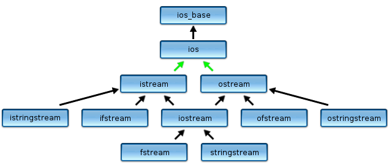

The Stream Classes
The C++ standard library stream headers contain several different classes that form a class hierarchy, designed using the object-oriented facility known as inheritance.

Note headers, not header. Until now, we have had one stream header: <iostream>. To read and write to files (instead of the standard streams), we'll use the file stream classes—ifstream and ofstream—found in the <fstream> header. The name ifstream stands for input-file-stream, while the name ofstream stands for output-file-stream.
In the diagram above, each class is a derived class (or subclass), of the class above it. Thus, istream and ostream are both derived from ios, and are specialized kinds of ios objects. In the opposite direction, ios is a base class (or superclass) of both istream and ostream. Similarly, ifstream is derived from istream and ostream is the base class of ofstream.
This relationship—between base and derived classes—is conveyed by the words is a. Every ifstream object is a istream, and, by continuing up the hierarchy, an ios. This means that characteristics of any class are inherited by its derived classes.
 This course content is offered under a
CC
Attribution Non-Commercial license. Content in this course
can be considered under this license unless otherwise noted.
This course content is offered under a
CC
Attribution Non-Commercial license. Content in this course
can be considered under this license unless otherwise noted.